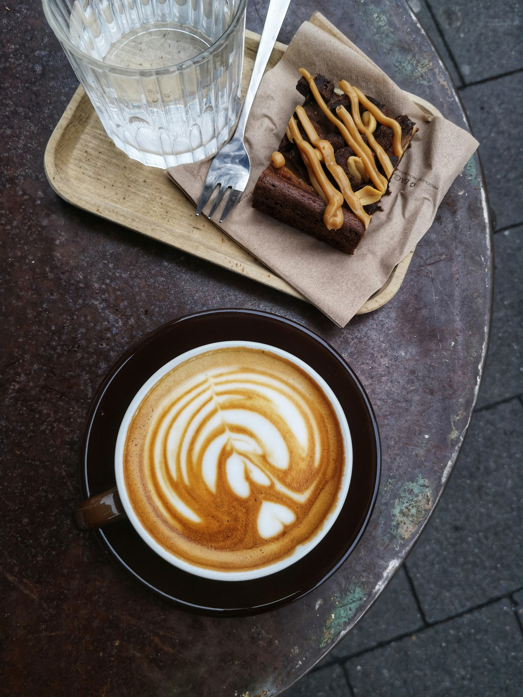
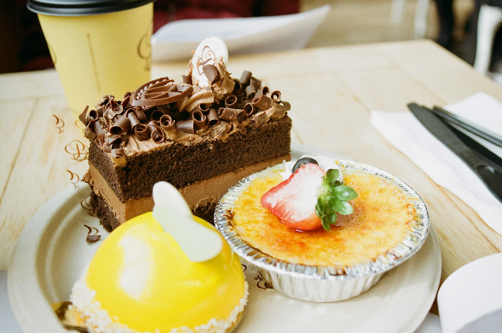
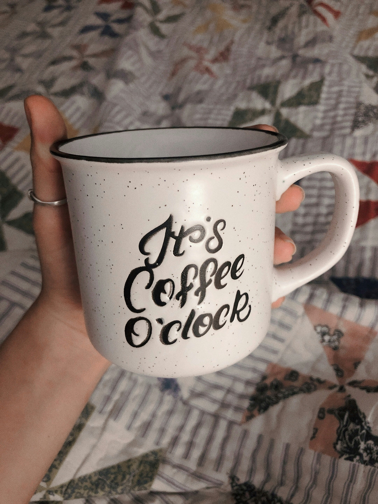

A Cup of Coffee With A Slice Of CakeThis is what you get when you buy at Bloom cafe, this combo is available now. Make sure you visit Before it's sold out. R97.00 |

Pastries and delicious dessertsGet yourself delicious pastries at a very low price, freshly made at the cafe. R75.00 |

A coffee Mug For You From UsA gift from us to you, you can buy this coffee mug from us, at a special price. Choose one from different cups R100.00 |

The Best Coffee Beans In South AfricaMake your own coffee with our brewed coffee beans, available at the cafe R180.00 |
Email: beanbloom06cafeorders@gmail.com | Phone: +27-584-8739
At Bean & Bloom Cafe, every cup of coffee you sip and every slice of cake you enjoy carries more meaning than just a delicious treat. From the very beginning, our dream was not only to create a warm space for coffee lovers but also to make a difference in the lives of those who need it most. That's why a part of what we do is dedicated to giving back to the community that has embraced us.
Each month, our team bakes fresh treats that are lovingly delivered to local orphanages and homeless shelters. For the children, it's more than a cupcake it's a reminder that they are cared for and cherished. For those in shelters, a warm muffin or a sweet slice offers comfort during difficult times. These small acts of kindness have created countless smiles, and with your support, we can continue spreading that joy even further.
When you choose Bean & Bloom, you're not just supporting a cafe, you're becoming part of a movement of kindness, compassion, and community growth. Every purchase helps us bake more, give more, and love more. Together, let's keep the warmth alive, one cup and one treat at a time.